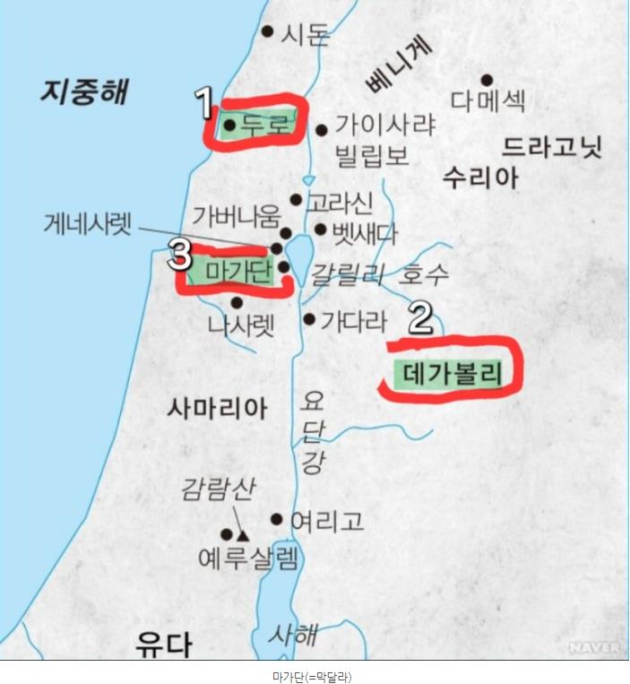
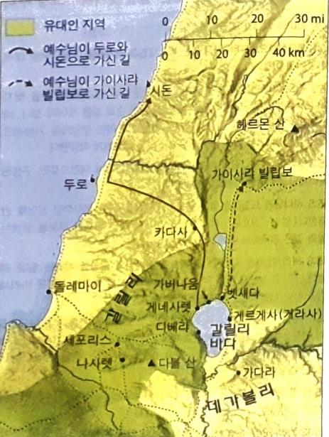

1그 때에 바리새인과 서기관들이 예루살렘으로부터 예수께 나아와 이르되
2당신의 제자들이 어찌하여 장로들의 전통을 범하나이까 떡 먹을 때에 손을 씻지 아니하나이다
장로들의 전통=모세5경 이외의 구두로 전승된 유대관습으로 이후 미쉬나로 성문화됨, 사두개파는 이를 거부, 여기서 바리새인들은 원래 제사장들에게 주어진 율법을 일반 백성들에게까지 필요없이 강요함(손씻기는 성막의 제사장들이 취해야할 율법이지 일반인들에게 해당되는 것이 아님)
3대답하여 이르시되 너희는 어찌하여 너희의 전통으로 하나님의 계명을 범하느냐
4하나님이 이르셨으되 네 부모를 공경하라 하시고 또 아버지나 어머니를 비방하는 자는 반드시 죽임을 당하리라 하셨거늘
5너희는 이르되 누구든지 아버지에게나 어머니에게 말하기를 내가 드려 유익하게 할 것이 하나님께 드림이 되었다고 하기만 하면
부모에게 드릴 것을 하나님께 드리겠다고(고르반) 말만하면 된다면서 불효를 정당화
6그 부모를 공경할 것이 없다 하여 너희의 전통으로 하나님의 말씀을 폐하는도다
7외식하는 자들아 이사야가 너희에 관하여 잘 예언하였도다 일렀으되
8이 백성이 입술로는 나를 공경하되 마음은 내게서 멀도다
9사람의 계명으로 교훈을 삼아 가르치니 나를 헛되이 경배하는도다 하였느니라 하시고
10무리를 불러 이르시되 듣고 깨달으라
11입으로 들어가는 것이 사람을 더럽게 하는 것이 아니라 입에서 나오는 그것이 사람을 더럽게 하는 것이니라
12이에 제자들이 나아와 이르되 바리새인들이 이 말씀을 듣고 걸림이 된 줄 아시나이까
13예수께서 대답하여 이르시되 심은 것마다 내 하늘 아버지께서 심으시지 않은 것은 뽑힐 것이니
14그냥 두라 그들은 맹인이 되어 맹인을 인도하는 자로다 만일 맹인이 맹인을 인도하면 둘이 다 구덩이에 빠지리라 하시니
15베드로가 대답하여 이르되 이 비유를 우리에게 설명하여 주옵소서
16예수께서 이르시되 너희도 아직까지 깨달음이 없느냐
17입으로 들어가는 모든 것은 배로 들어가서 뒤로 내버려지는 줄 알지 못하느냐
18입에서 나오는 것들은 마음에서 나오나니 이것이야말로 사람을 더럽게 하느니라
19마음에서 나오는 것은 악한 생각과 살인과 간음과 음란과 도둑질과 거짓 증언과 비방이니
=십계명
20이런 것들이 사람을 더럽게 하는 것이요 씻지 않은 손으로 먹는 것은 사람을 더럽게 하지 못하느니라
21예수께서 거기서 나가사 두로와 시돈 지방으로 들어가시니
22가나안 여자 하나가 그 지경에서 나와서 소리 질러 이르되 주 다윗의 자손이여 나를 불쌍히 여기소서 내 딸이 흉악하게 귀신 들렸나이다 하되
지경에서 나왔다는 의미는 위치적인 의미가 아니라 가나안의 종교적인 지경을 벗어나 예수님을 믿는다는 의미
23예수는 한 말씀도 대답하지 아니하시니 제자들이 와서 청하여 말하되 그 여자가 우리 뒤에서 소리를 지르오니 그를 보내소서
24예수께서 대답하여 이르시되 나는 이스라엘 집의 잃어버린 양 외에는 다른 데로 보내심을 받지 아니하였노라 하시니
25여자가 와서 예수께 절하며 이르되 주여 저를 도우소서
26대답하여 이르시되 자녀의 떡을 취하여 개들에게 던짐이 마땅하지 아니하니라
여기서는 퀴나리온이 쓰임-쿠온(κύων): 이방인 뿐 아니라 온갖 부정적인 대상을 의미하는 개, 퀴나리온(κυνάριον): 집에서 애완용으로 기르는 귀여운 강아지
27여자가 이르되 주여 옳소이다마는 개들도 제 주인의 상에서 떨어지는 부스러기를 먹나이다 하니
28이에 예수께서 대답하여 이르시되 여자여 네 믿음이 크도다 네 소원대로 되리라 하시니 그 때로부터 그의 딸이 나으니라
29예수께서 거기서 떠나사 갈릴리 호숫가에 이르러 산에 올라가 거기 앉으시니
30큰 무리가 다리 저는 사람과 장애인과 맹인과 말 못하는 사람과 기타 여럿을 데리고 와서 예수의 발 앞에 앉히매 고쳐 주시니
31말 못하는 사람이 말하고 장애인이 온전하게 되고 다리 저는 사람이 걸으며 맹인이 보는 것을 무리가 보고 놀랍게 여겨 이스라엘의 하나님께 영광을 돌리니라
32예수께서 제자들을 불러 이르시되 내가 무리를 불쌍히 여기노라 그들이 나와 함께 있은 지 이미 사흘이매 먹을 것이 없도다 길에서 기진할까 하여 굶겨 보내지 못하겠노라
데가볼리로 가심
33제자들이 이르되 광야에 있어 우리가 어디서 이런 무리가 배부를 만큼 떡을 얻으리이까
34예수께서 이르시되 너희에게 떡이 몇 개나 있느냐 이르되 일곱 개와 작은 생선 두어 마리가 있나이다 하거늘
35예수께서 무리에게 명하사 땅에 앉게 하시고
36떡 일곱 개와 그 생선을 가지사 축사하시고 떼어 제자들에게 주시니 제자들이 무리에게 주매
37다 배불리 먹고 남은 조각을 일곱 광주리에 차게 거두었으며
38먹은 자는 여자와 어린이 외에 사천 명이었더라
39예수께서 무리를 흩어 보내시고 배에 오르사 마가단 지경으로 가시니라
마가단=막달라 마리아가 살던 막달라라고 추정

